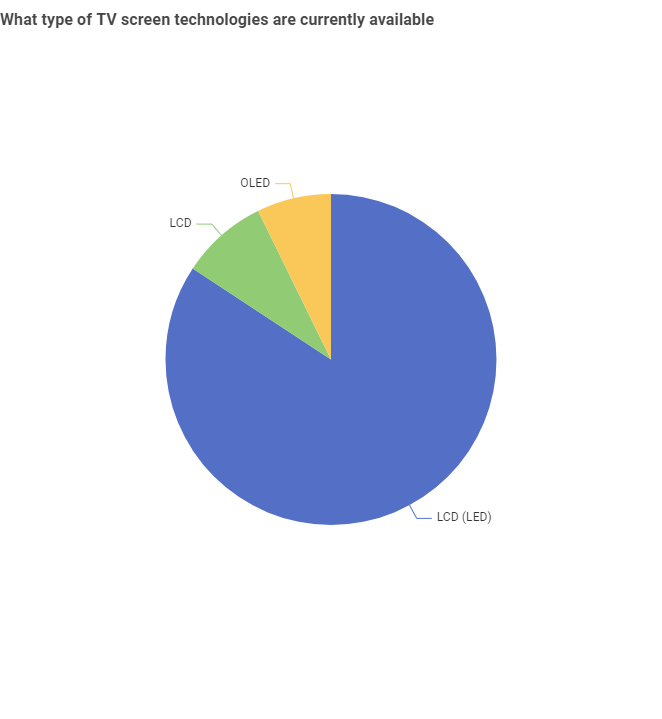
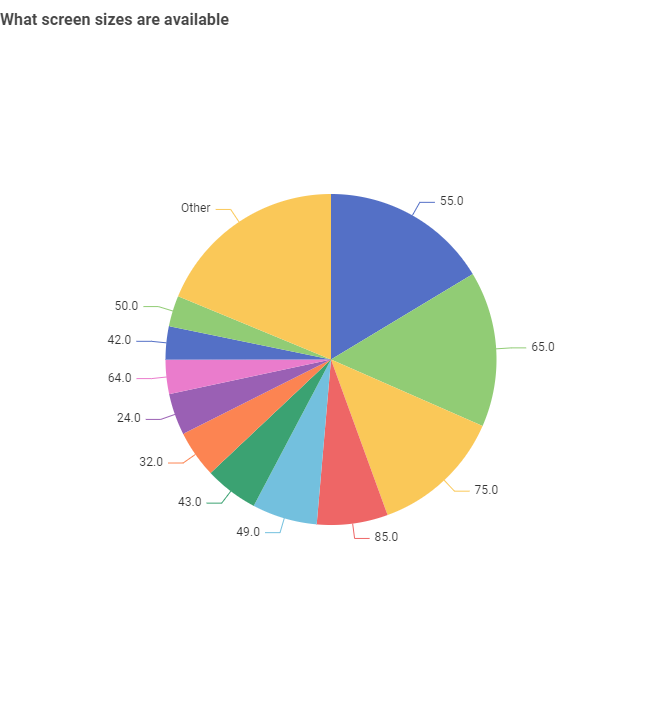
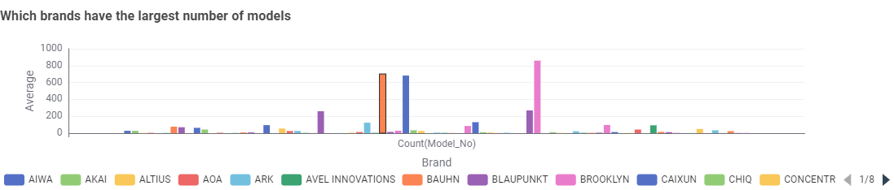
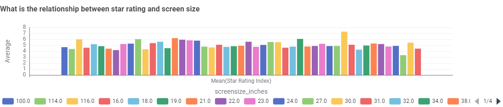

Tips for Television purchase and caring
Television plays an important role in daily life. It helps people gather information and enjoy entertainment easily.
Apart from that, wise choices should be considered when purchasing a television for your place, with some tips to be considered:
- Consider your screen size based on viewing distance. Bigger isn’t always better if your room is small.
- Check the screen technology (LCD, LED, OLED) — each has different picture quality, brightness, and energy use.
- Look at the energy star rating. Higher ratings mean lower long-term electricity costs.
- Compare brand options — some brands offer more models, others focus on premium features.
- Don’t ignore power consumption, especially if the TV is large. Bigger screens often use more power.
Besides those considerations, you should also follow these tips to take care of your television to prolong its lifespan:
- Avoid leaving the TV on for very long hours unnecessarily — it saves energy and reduces wear.
- Keep the screen clean with a microfiber cloth, never harsh chemicals.
- Ensure proper ventilation around the TV to prevent overheating.
- Use a surge protector to guard against sudden power spikes.
- Adjust brightness settings — high brightness shortens panel life and consumes more power.
History of TV
This section will genuinely discuss findings from the Australian Government's Television Energy Rating dataset. The goal is to help Australian consumers make adjustable decisions based on brand, technology, size, star rating, efficiency, and popularity.
LCD is the most common technology in Australia, followed by LED and OLED.
The most frequent TV sizes are 54.6 inches and 64.5 inches, showing a preference for mid-to-large screens.
Samsung and LG dominate with the highest number of models, showing strong market presence.
LCD-based technologies consume the least power on average compared to OLED and others

Larger screens generally consume more power. TVs around the 40–80 inch range provide a balance between size and efficiency
TVs at around 69.5 inches show higher star ratings, suggesting that even larger TVs can be energy efficient if well-designed.
Conclusion
Australians prefer LCD televisions in mid-to-large sizes, especially from leading brands like Samsung and LG.
While larger screens naturally use more power, many models still achieve high star ratings, showing improvements in energy efficiency.
By considering screen size, technology type, brand, and energy ratings, consumers can make smarter choices that balance entertainment quality with long-term energy savings.